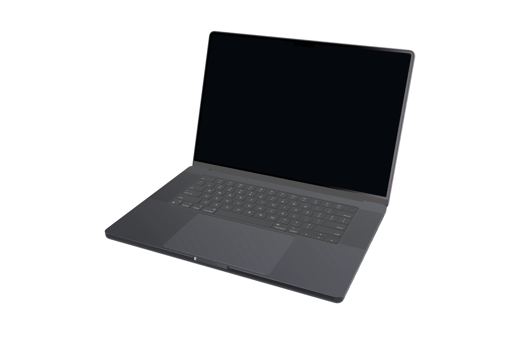

LIENZO / Photorealistic mockup
Perspective Laptop Mockup
Present your MP4 recording or screenshot on a laptop viewed in perspective. Adjust the framing and save the project for offline viewing.
MP4 + imageHTML · CSS · JS
Presentation stage
Sample

Prism
01 / Matter and light
Visual notebook
Light shapes design.
A study in color, surface, and perspective.
Matter and light01 / 01
How to use it in your project
Extract the ZIP and open index.html. Customize the demo and download your edited HTML. Keep its styles, scripts, fonts, and notices beside it. Demo changes and favorites reset on reload.